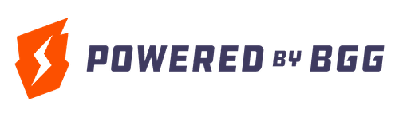

cli · mcp server · go library
BoardGameGeek, everywhere you work.
Search games, browse collections, and pull geeklists from your terminal — or hand the same tools to Claude and any other MCP host. Built on a rate-limited, retry-aware Go client for the BGG XML API.
Requires your own free BGG API token — register with BGG to get one.
$ bggclient search "Brass Birmingham" --exact { "boardgames": [{ "objectId": "224517", "yearPublished": 2018, "name": { "value": "Brass: Birmingham" } }] } $ bggclient serve # MCP over stdio
what you get
One binary, three ways in.
Colourful CLI
Syntax-highlighted JSON for search, boardgames, collections, and geeklists. Respects NO_COLOR and pipes cleanly.
MCP server
Four typed tools over stdio or streamable HTTP, built on the official MCP Go SDK. Ask Claude about your collection.
Go library
The xml1 package underneath: context-aware, typed errors, functional options, dual xml/json models.
Polite by default
Built-in rate limiting (one request per 5s), automatic retries on 429 and BGG's 202 "still preparing" responses, and Bearer-token auth.
the cli
Your collection, one command away.
Every endpoint of the BGG XML API 1, with flags for all the filters. Set BGG_API_TOKEN once and go.
# search by name bggclient search "Catan" # full details, stats included bggclient boardgame 13 224517 --stats # owned games rated 7+ bggclient collection richardwooding \ --own --min-rating=7
# geeklists, with comments bggclient geeklist 11205 --comments # plain output for scripts bggclient search "Root" --no-color | jq # be extra gentle to BGG bggclient --request-interval=10s search "Ark Nova"
the mcp server
Give your assistant a seat at the table.
bggclient serve exposes BGG as typed MCP tools — structured output schemas included — over stdio or streamable HTTP.
Tools
- bgg_search
- bgg_get_boardgames
- bgg_get_collection
- bgg_get_geeklist
Search, fetch up to 20 games with stats, filter collections by ownership/rating/plays, and pull geeklists.
# Claude Code claude mcp add bggclient \ --env BGG_API_TOKEN=your-token \ -- bggclient serve # or remote, over streamable HTTP bggclient serve --http :8080
the library
The client underneath.
api := xml1.NewAPI(xml1.Options{ BaseURL: "https://boardgamegeek.com/xmlapi", APIToken: os.Getenv("BGG_API_TOKEN"), }) games, err := api.SearchBoardgames(ctx, "Catan") items, err := api.GetCollection(ctx, "user", xml1.Own(true))
Typed all the way down
Functional options per endpoint, typed errors (NotFoundError, TooManyRetriesError, …), and models that marshal to both XML and JSON. Tested offline against a recorded BGG cassette.
install
Pick your poison.
First: get your own BGG API token
The BGG XML API only accepts registered applications — without a token every request is rejected with 401 Unauthorized. Registration is free for non-commercial use:
- Register your application with BGG (needs a BGG account)
- Create an API token on the same page
- Export it:
export BGG_API_TOKEN=your-token
Play by the rules
Your use of the data is governed by the XML API Terms of Use: the data is licensed for non-commercial purposes, must be credited to BoardGameGeek, and may not be used to train AI/LLM systems. bggclient rate-limits itself to stay well within BGG's guidance.
brew install richardwooding/tap/bggclient
go install github.com/richardwooding/bggclient@latest
docker run --rm -e BGG_API_TOKEN ghcr.io/richardwooding/bggclient search "Catan"

All game data is sourced from BoardGameGeek and used under the XML API Terms of Use.